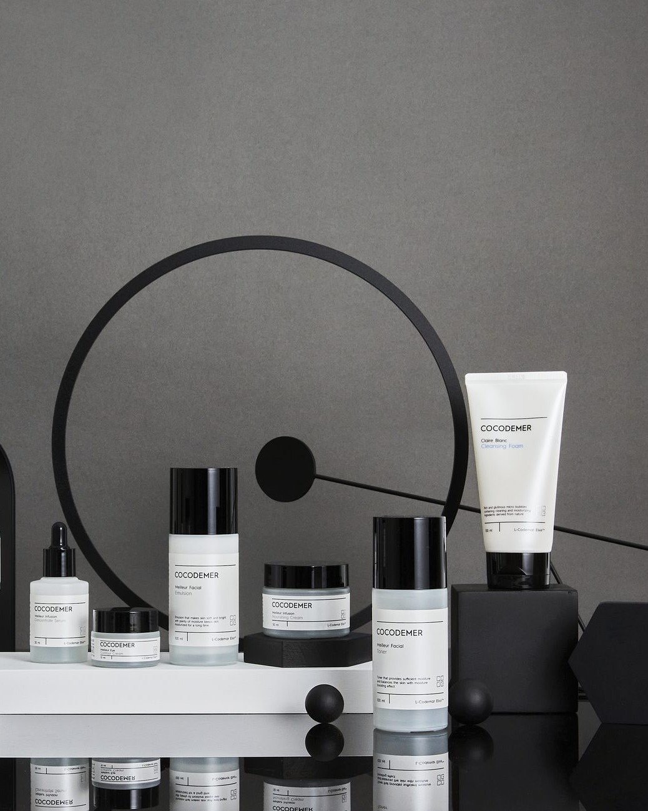

BRAND
Connect Code of intrinsic Merit
Connect Code of intrinsic Merit
코코드메르라는 이름에는 두 겹의 뜻이 있습니다.
하나는 세이셸의 코코 드 메르(Coco-de-Mer)입니다. 유네스코 자연유산으로 보호되는 희소한 야자이고, 이 열매에서 브랜드의 독자 원료 L-CODEMAR ELIXIR™가 나왔습니다.
다른 하나는 Connect Code of intrinsic Merit — 본질적 가치를 잇는 코드라는 뜻입니다.
희소한 식물에서 출발해 피부가 받아들이는 형태로 설계하고 그 사이를 잇는 일. 코코드메르가 하는 일은 이 한 문장으로 정리됩니다.

세이셸에서 출발한 원료
코코 드 메르는 세이셸 제도에만 자생하는 야자로, 세계에서 가장 큰 씨앗을 맺습니다. 원시 그대로의 환경에서 오랜 시간에 걸쳐 자라는 이 열매를 브랜드의 출발점으로 삼았습니다.
천연 아미노산이 풍부한 이 열매를 모방해, 식물 원료를 기반으로 한 독자 기술 L-CODEMAR ELIXIR™를 만들었습니다. 다중층 나노겔 에멀젼 캡슐레이션으로 주성분을 안정화하고, 피부 구조와 닮은 리포좀 형태로 설계해 전달 효율을 높였습니다.
순서가 만드는 균형
좋은 성분을 많이 넣는 것만으로는 피부가 달라지지 않습니다. 어떤 상태의 피부에, 어떤 순서로 올리느냐가 결과를 가릅니다.
그래서 코코드메르는 제품을 나열하는 대신 순서를 설계했습니다. 피부를 정돈하고(Reset), 유효 성분을 전달하고(Boost), 그 상태를 붙잡아 두는(Keep) 세 단계입니다. 각 단계에 전용 기술을 두어, 앞 단계가 다음 단계의 조건을 만들도록 했습니다.
원료 · 기술 보기
맞춤형 화장품 시기의 브랜드 영상
개인 맞춤 처방 서비스를 운영하던 시기에 제작한 영상입니다. 해당 서비스는 현재 운영하지 않으며, 브랜드의 기록으로 남겨 둡니다. · 1분 56초

미스지컬렉션 22SS 쇼
2022 S/S 컬렉션 쇼에 코코드메르가 함께했습니다. 런웨이 현장 기록입니다.